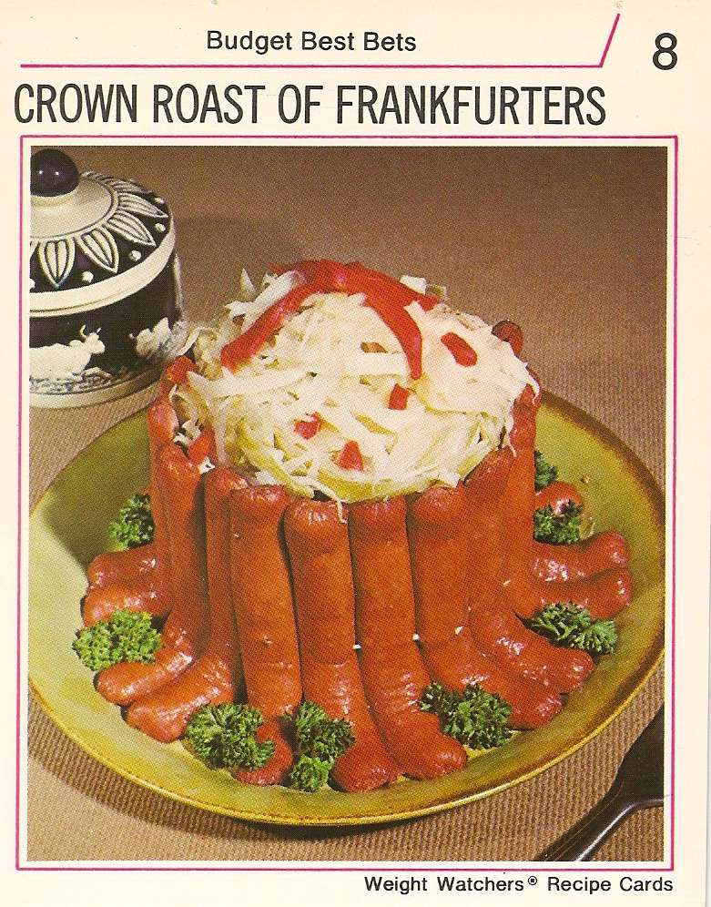

For when times are rough. Or if you just hate yourself.

"Jordan, you're a mad man. You've gone too far!" That's what they told me when I made this dish for my family. They must have loved it and I know you will too!
Ingredients
- A dozen hotdogs of the lowest quality
- 1 white onion
- Can of tomato paste
- 1 head of brocoli
Directions
- Consider skipping this dish entirely
- Cut onion into strips
- Make a "volcano" out of the hotdogs
- Fill the middle of the "volcano" with onions
- Apply tomato past over the top for some strange reason
- Garnish with brocoli
- This one doesnt even get cooked. You just eat it like this... Enjoy!